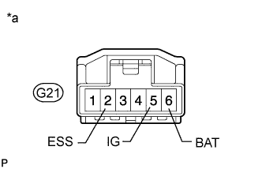

DTC C1625 Open or Short in Steering Angle Sensor +B |
| DTC Code | DTC Detection Condition | Trouble Area |
| C1625 | Open or short in steering angle sensor +B |
|
| 1.CHECK HARNESS AND CONNECTOR (SPIRAL WITH SENSOR CABLE SUB-ASSEMBLY POWER SUPPLY) |
|  |
Disconnect the G21 spiral with sensor cable sub-assembly connector.
Measure the resistance according to the value(s) in the table below.
| Tester Connection | Switch Condition | Specified Condition |
| G21-2 (ESS) - Body ground | Engine switch off | Below 1 Ω |
Measure the voltage according to the value(s) in the table below.
| Tester Connection | Condition | Specified Condition |
| G21-5 (IG) - G21-2 (ESS) | Engine switch on (IG) | 11 to 14 V |
| G21-6 (BAT) - G21-2 (ESS) | Always | 11 to 14 V |
| *a | Front view of wire harness connector (to Spiral with Sensor Cable Sub-assembly) |
|
| ||||
| OK | ||
| ||